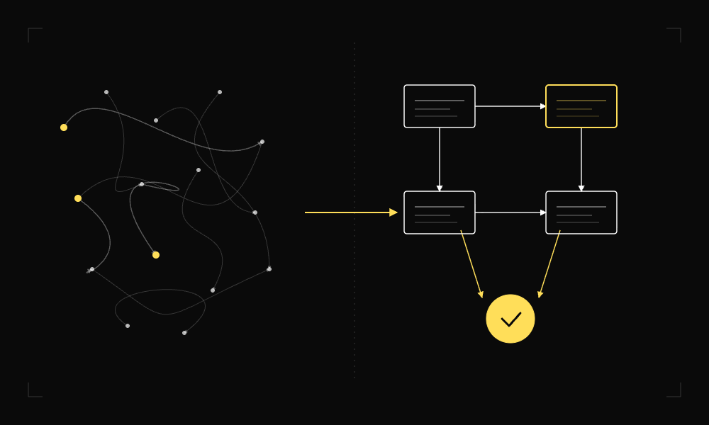
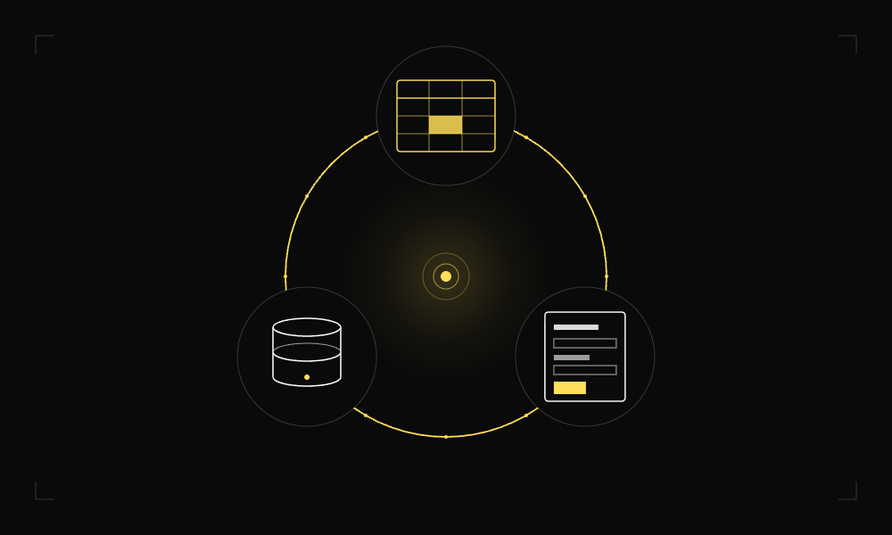
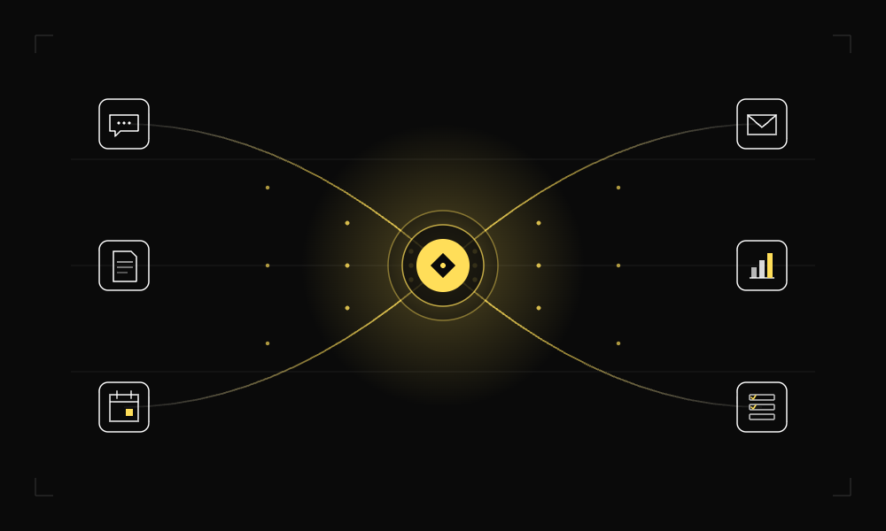
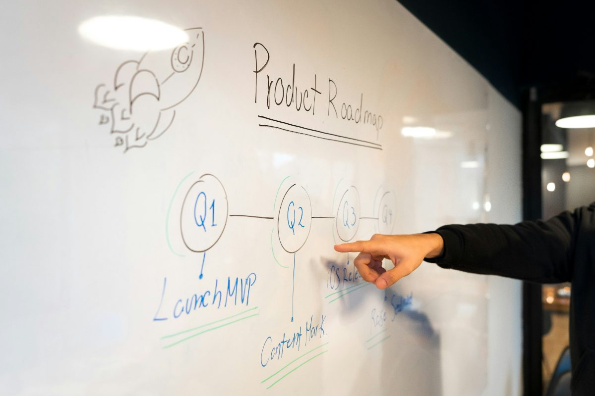

ツール紹介
Claude 中小企業活用ガイド｜現場で試したい3つの場面と注意点
Claudeが2026年4月のOpus 4.7公開で大きく進化しました。長文要約・提案書づくり・画像認識の3点で実務精度が向上。中小企業がすぐ試せる活用シーンと、失敗しない導入の進め方を十勝の事例を交えて解説します。
いきなりAI、その前にやることがあります。
デジタル化 → DX → AI導入・AX の3段階を一気通貫で設計・実装。
「何から手をつければいいか」から一緒に考えます。
単なるツール作成にとどまらず、
「運用が回り、利益が出る状態」まで。
戦略を描くだけのコンサルタントではなく、単なるツール導入業者でもありません。
経営者の隣で「デジタルを活用した業務設計」を行い、現場への定着・運用まで責任を持って遂行する「実行部隊」としての役割を担います。属人化を解消し、誰がやっても成果が出る「型」を作ることで、企業の収益力を強化します。
社長の頭の中にあるノウハウや属人的な業務手順を、誰でも対応できる仕組みに落とし込みます。
口頭指示や、履歴が流れるLINE連絡から脱却し、抜け漏れを防ぐ確実な情報共有の「型」を作ります。
現場が使いこなせない高額なシステムは入れず、使い慣れたツールを活用して無理のない確かなDXを実現します。
ビジネスの現場を熟知。貴社の言葉を即座に理解します。机上の空論ではなく、現場で使える提案をお約束します。
「ふわっとした悩み」をヒアリングで具体化。設計図がない状態からのご相談も得意です。言葉にならない課題を形にします。
「作って終わり」にしません。現場への定着、運用後の微調整まで、責任を持って対応します。
順番が大事です。段階を飛ばすと、AIは現場に定着しません。
DX Factoryは「土台→自動化→AI活用」を順番に積み上げます。
紙・口頭・ExcelバラバラをGoogleスプレッドシートやNotionに集約。「誰でも見える状態」が全ての出発点です。
業務フローを設計し直し、GASアプリ等で自動化。人が判断すべき仕事と、仕組みに任せる仕事を明確に分けます。
整った業務フローの上にAIを乗せて、はじめてAIは戦力になります。ChatGPT・Claudeを業務に組み込み、最終的には経営判断にAIを活用する組織へ。「いきなりAI」では届かない場所です。
単なるツール作成にとどまらず、
「運用が回り、利益が出る状態」までサポートします。

複雑な業務フローを可視化し、無駄を削ぎ落とした業務設計を行います。「なぜその作業が必要なのか？」を問い直し、あるべき業務フローを描きます。

ゼロからシステムを開発するのではなく、Googleスプレッドシートなどの汎用ツールを活用し、「ミスが起きない」確実な仕組みを作ります。

Slack, Notion, HubSpot等、最適なツールの選定と連携設定を行います。バラバラだった情報を一元化し、業務の効率を飛躍的に高めます。
「うちの場合、何から整理すればいい？」その疑問、まずは30分で解決します
無料で壁打ちする →実際の支援事例と、お客様の声。
葬儀ごとの手配情報・仕入れ発注・スタッフ担当がそれぞれ別のExcelや紙で管理されており、担当者が都度ファイルを参照・転記する作業が発生していた。部門間の情報連携にタイムラグがあり、「手配漏れ」「発注ミス」が繰り返し起きていた。
進行管理・発注・スタッフ情報をGoogleスプレッドシートに一元化。Google Apps Script（GAS）を活用し、情報の転記・関係者への通知を自動化。担当者が入力すれば、必要な情報が必要な人へ自動で届く仕組みを構築した。
毎日発生していた転記作業が完全になくなった。経営者からは「何が起きているか、リアルタイムで見えるようになった」との声をいただき、現場の状況把握と意思決定のスピードが大幅に向上した。
「転記作業がゼロになり、毎日2時間は別の仕事に使えるようになりました。何が起きているかリアルタイムで見えるのも大きい」
樹木・石材など1点ものを扱う造園資材の卸業。顧客から問い合わせが入るたびに仕入れ業者へ電話で在庫確認をする必要があり、その往復の間、顧客を待たせ続けるのが常態化していた。注文情報も電話・FAX・LINEに分散しており、受発注の全体像が誰にも把握できていない状態だった。
在庫・受発注情報をGoogleスプレッドシートに一元化。Google Apps Script（GAS）を活用し、在庫が更新されると関係者に自動で通知が届く仕組みを構築した。さらに在庫情報を顧客に共有できる形に整備したことで、問い合わせから受注までの流れがスムーズになった。
業者への在庫確認の往復がなくなり、顧客への回答スピードが大幅に向上。在庫情報を顧客に送ったところ即座に反応があり、早速注文につながる成果も生まれた。
「回答スピードが上がって受注につながりました。導入した翌週に在庫共有から即注文が入り、効果をすぐ実感できた」
複数クライアントのGoogle広告データを毎日手動でコピペ・CSVダウンロードして集計する作業が常態化していた。担当者の時間をかなりの割合で消費しており、データを「集める作業」に追われて「見る・考える作業」に十分な時間を使えていなかった。
Google広告スクリプト（GAS）を活用し、広告データの取得・集計を完全自動化。毎朝、前日分のデータが自動でスプレッドシートに展開される仕組みを構築した。担当者がログインしてコピペする作業を工程ごとゼロにした。
毎日発生していたデータ収集作業が完全になくなり、空いた時間を数値分析・改善提案に充てられるようになった。ミスや見落としのリスクも解消。クライアントへの報告もスピードアップした。
「毎朝1時間かかっていたデータ集計が完全になくなり、分析と改善提案に時間を使えるようになった。ミスも減ってクライアントへの報告も早くなりました」
同じような課題を感じている方、まずはお気軽にどうぞ
対応可能ツール
上記以外のツールについてもお気軽にご相談ください。
企業の課題とご予算に応じた3つのステージ
課題を見つける
課題特定からツール構築・定着まで、1業務を「実際に動く状態」で完結させます。
目安期間：約2〜3ヶ月
対象範囲：1部門・1業務プロセスを完結支援
仕組みを作る
複数部門または全社を対象に、業務の断捨離・ツール選定・設定・現場導入研修までを一括提供。
目安期間：約3〜6ヶ月
対象範囲：複数部門をまたぐ / 全社横断の業務改善
走り続ける
月1回の定例会、ツール保守、改善提案を行う顧問契約。自走する組織を作ります。
目安期間：6ヶ月〜（顧問契約）
対象範囲：全社的な継続DX推進
✓ オンライン30分・完全無料・営業電話なし
EC事業会社の経営メンバーとして、基幹ERP導入・リプレイスによる業務自動化、5営業日での月次決算などを実現。「数字に直結する仕組み化」を実践。
その後、教育サービス会社でも経営メンバーとして管理会計導入・CRMリプレイスPM・赤字部門立て直しを主導。2025年、北海道を拠点に独立。
「ITツールを入れること」ではなく、「誰でも回せる業務の流れを設計すること」を軸に、中小企業のDX・業務改善に伴走しています。
DX・AI活用に関するコラム・事例紹介
Claudeが2026年4月のOpus 4.7公開で大きく進化しました。長文要約・提案書づくり・画像認識の3点で実務精度が向上。中小企業がすぐ試せる活用シーンと、失敗しない導入の進め方を十勝の事例を交えて解説します。

現場写真とメモをClaudeに渡すだけで、自動的に見積書・作業報告書を生成。導入3ヶ月で月40時間の削減を実現した事例を紹介します。

中小企業のDXの成功率はわずか21%。失敗の64%は「業務プロセス整理不足」が原因とされています。本記事では、ITツール導入の前に必ずやっておきたい業務棚卸し3ステップを、可視化・課題抽出・優先度付けの順で具体的に解説します。
よくいただくご質問
「何から手をつけていいか分からない」という方は、
まずは無料のオンライン壁打ち（30分）をご活用ください。
Web会議でのヒアリングも可能です。
お気軽に「メッセージ」よりお問い合わせください。
原則24時間以内にご返信いたします。